Per creare un circuito quantistico si usano dei gates che qui vengono esplicati. Nel computer quantistico per
eseguire i gates si esegue una fase detta Pulse che richiede una diversa quantità di energia per ciascun gate.
I quantum gates vengono rappresentati da una Unitary matrix: U†U = UU† = 1
Con la Dirac Notation U = ( U00 U01 U10 U11) = U00 |0x0| + U01 |0x1| + U10 |1x0| + U11 |1x1|
Hadamard
Questo gate si utilizza per creare la superposition, si forza il qubit a muoversi dallo stato ∣0⟩
per poi misurarne il valore e si ha circa il 50% di possibilità di avere come risultato ∣0⟩ e 50% di avere ∣1⟩.
Nello spazio vettoriale di Hilbert il gate H viene rappresentato con la seguente formula:
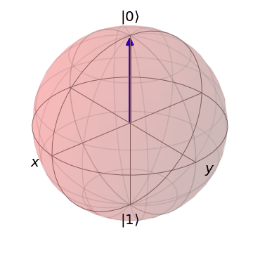
Nella figura a lato vediamo il risultato dell'operazione H∣0⟩ = ∣+⟩ (x) mentre se si esegue
H∣1⟩ = ∣-⟩ parte opposta della x.
Matematicamente, tramite l'algebra vettoriale quando applichiamo questo gate eseguiamo le seguenti operazioni sui 2 qubit:
con H creiamo superposition e può essere usato anche per il change tra x e z bases.
H|+⟩ = |0⟩ H|-⟩ = |1⟩
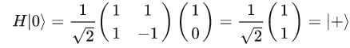
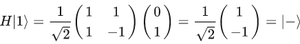
Qui vediamo un esempio di un circuito a cui applichiamo il gate H :
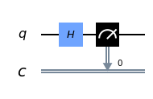
Sotto vediamo l'esito di una simulazione e la distribuzione dei risultati su 5000 shots:
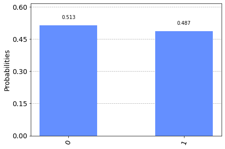
X GATE
Il Pauli gate X è un bit-flip gate nel senso che inverte il valore che trova in input. Se input = ∣0⟩ l'output diviene
∣1⟩ e viceversa.
Questo gate ruota la superposition nell'asse x.
Il risultato si ottiene moltiplicando algebricamente X con ∣0⟩ e con ∣1⟩.
Equivale ad una rotazione nell'asse x nella sfera di Bloch di π radians.
Il gate x = (0 1 1 0) nella Dirac Notation |0x1| + |1x0|
applicato a |0⟩ = (01 10) (1 0) = (01 + 10 11 + 00) = (0 1) = |1⟩
mentre x|1⟩ = (|0x1| + |1x0| ) * |1⟩ = ∣0⟩<1|1> + |1x0∣1⟩ = |0⟩ + 0 = ∣0⟩ cioè (1 0)
Y GATE
Il Pauli Y gate equivale al Ry. Equivale anche agli effetti conbinati di X e Z.
Questo gate ruota la superposition nell'asse y.
The Pauli Y gate è un single-qubit rotation attraverso π radians nell'asse delle y. Effettua un bit e fase flip.
Y = (0 -i i 0 ) = i σx σz
σi² = I matrix = ( 1 0 0 1) applicata ad un qubit non modifica nulla.
La I matrix e le Pauli matrix formano basis della 2x2 matrix quindi ogni rotazione può essere scritta come linear combination
dei gates importante per error correction.
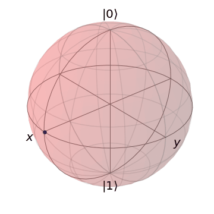
Z GATE
Il gate Z effettua una rotazione di π radians nell'asse della z.
Questo gate ruota la superposition nell'asse z.
gate z = (1 0 0 -1)= |0x0|-|1x1| e se applicato z∣+⟩ = (1 0 0 -1) 1/√2 (1 1) = 1/√2 (1 -1) = ∣-⟩
mentre z∣-⟩ = (|0x0|-|1x1|) 1/√2 (∣0⟩-∣1⟩) = 1/√2 (∣0⟩+∣1⟩) = ∣+⟩
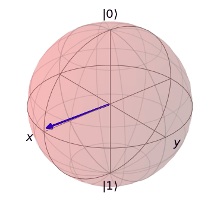
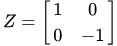
CX GATE
Il controlled-NOT gate opera su più qubits, un control qubit e gli altri sono i target qubit.
Se il control qubit è nello stato ∣1⟩ esegue il gate X nel target qubit.
Se il control qubit è in superposition il C-NOT gate crea l'entanglement.
Per calcolare il valore dei qubits si effettua il tensor product
∣a⟩ X ∣b⟩ = (a1 a2 ) x (b1 b2) e otteniamo il vettore (a1b1 a1b2 a2b1 a2b2).
Quando siamo in presenza di più qubit vengono rappresentati con il simolo ∣00⟩ o ∣000⟩ in base al numero
dei qubits. Se i qubits sono correlati si ha il fenomeno chiamato entanglement e si rappresenta
|ψ⟩= 1/√2 (|00⟩ + |11⟩) = 1/√2 (1 0 0 1)
L'identity gate è un gate che non fa nulla al qubit. Tutto rimane inalterato.
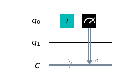
RX GATE
Questo gate genera una rotazione del qubit state nell'asse delle x nella Bloch sphere dell'angolo espresso in radianti che viene inserito come input.
Nelle figure sottostanti un esempio con Rx(0.2).
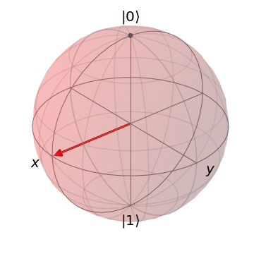
RY GATE
Questo gate genera una rotazione del qubit state nell'asse delle y nella Bloch sphere dell'angolo espresso in radianti che viene inserito come parametro in input.
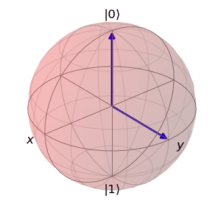
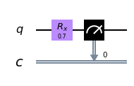
RZ GATE
Questo gate genera una rotazione del qubit state nell'asse delle Z nella Bloch sphere dell'angolo espresso in radianti che viene inserito come input.
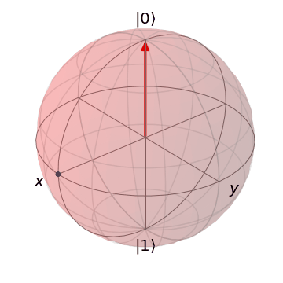
S GATE
Il gate S equivale al Rz gate per l'angolo π/2. Muove informazioni tra gli assi x ed y.
S gate add 90 gradi alla fase φ S = (1 0 0 i) se applico S∣+⟩ ottengo ∣+i⟩ mentre se applico S∣-⟩ ottengo ∣-i⟩
se applico SH cambio la basis da z a y.
SDG GATE
Il gate SDG(S dagger gate) è l'inverso del gate S. E' l'equivalente del gate Rz per l'angolo -π/2. Anche questo gate muove informazioni tra gli assi x ed y.
T GATE
The T gate è uguale ad una rotazione di Rϕ con ϕ = π/4.
TDG GATE
Il T dagger gate è l'inverso del gate T quybdi con una rotazione di -π/4.
CH GATE
Il controlled-Hadamard gate, come il controlled-NOT, esegue un controllo sul control qubit ed esegue un H gate sul target qubit se il control qubit è nello stato ∣1⟩.
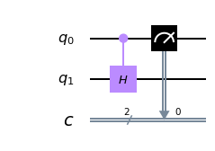
CZ GATE
Il controlled-Z gate, esegue un controllo sul control qubit ed esegue un Z gate sul target qubit se il control qubit è nello stato ∣1⟩.
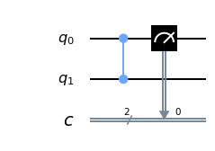
CRZ GATE
Il controlled-Rz gate, esegue un controllo sul control qubit ed esegue una rotazione Rz sul target qubit se il control qubit è nello stato ∣1⟩.
CCX GATE
Il ccX(Controlled-Controlled NOT gate) conosciuto anche come Toffoli gate ha 2 control qubits ed un target. Se entrambi i 2 control qubit sono nello stato ∣1⟩ applica un X gate nel target qubit.
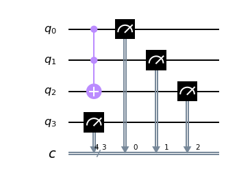
SWAP GATE
Lo SWAP gate esegue uno swaps dello stato tra 2 qubits. In questo modo posso ad esempio fare un entanglement tra 2 qubits che non sono fisicamente vicini.
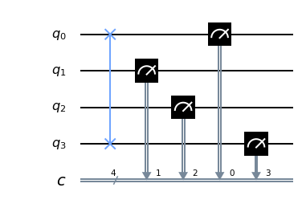
Barrier operation
Per rendere il circuito più efficiente il barrier gate previene la congiunzione dei gates.
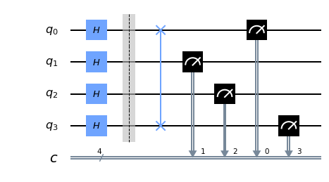
∣0⟩ operation
L'operazione di reset riporta un qubit allo stato precedente.
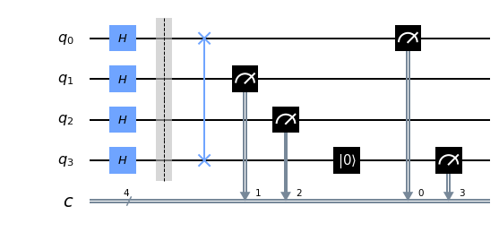
IF operation
Permette di condizionare l'applicazione di un gate.
Z measurement
Fa collassare il qubit nello stato ∣0⟩ o ∣1⟩ per poi misurarne lo stato.
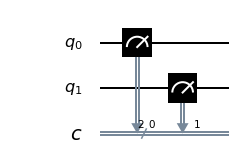
U3 GATE
Inserendo i tre parametri (theta θ, phi φ e lamda λ) effetuiamo una rotazione contemporaneamente sui 3 assi di un singolo qubit.
Nella simulazione sottostante i valori di θ, φ e λ sono tutti di π/2.
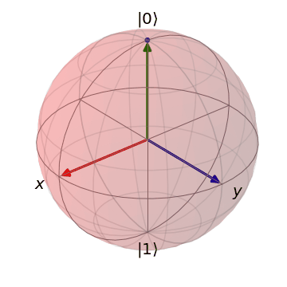
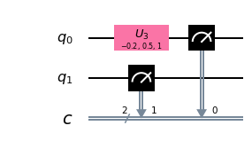
U2 GATE
I 2 parametri (φ, λ) permettono 2 diverse rotazioni nel gate e nell'esempio sottostante i parametri inseriti sono -0.9 e 0.1.
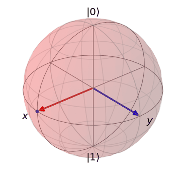
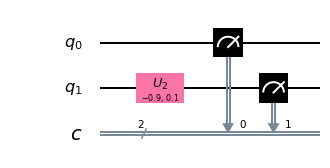
U1 GATE
Con λ si realizza una rotazione come con il gate Rz.